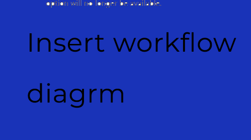

4
Service Tickets
Service tickets are designed to help move work through the business, capture anything that will help business functions, and deliver that information to those who need it to do their work. It is provided as a tool and meant as an aid in completing tasks efficiently. As a tool, it must be developed to the state that best fits your needs. If you have feedback on how to make it better, please share!
Life of a Service Ticket
-
When a customer calls with any issue, that is a good time to
launch into the Create Service Ticket screen. You can create a
service ticket:
- In the Ticketing Service module that is reached through the PowerApp Main Menu.
- Or, from the Operations Hub by clicking the "Direct to Create Service Ticket" button.
- Having it open while talking with the customer facilitates capturing all the relevant information in one place, and allows you to easily share that information with the rest of the team.
- When you have concluded the call, click submit to finalize the create process and initiate the workflow.
- Once submitted, you will be taken to the services dashboard. If you were able to solve the issue on that first call, you can close the ticket by clicking on the "My Requests" counter, Select your pending ticket on the top left where all your tickets will be listed, add some notes in the details section, then click "Resolved Over Call." Do this now because once action has been logged on this ticket, this option will no longer be available.
Technician Contributions
- After the initial submission, a ticket will be assigned to a technician. It is also a good idea to keep the ticket open when working on the product being serviced.
- Technicians will be notified via email of the new ticket assignment. When ready to open the ticket, go to the services module in the SaniStar App, click on the service ticket dashboard (second level beneath the top create row) and click, "Assigned Tasks" then select the pending ticket from the top left list of tickets, and the details section will appear on the right side of your screen. Scroll down to find your notes section, and parts used.
- Any notes provided will be very helpful for future reference, and will be valuable to help diagnose issues that span multiple tickets. It is important to select the parts, and quantity of part in the section to the right of notes. This is used to calculate the cost of the service for the invoice. Also, the total time you spent on the service should be logged here as well.
- Technicians, when you have completed the service, please change the status to "Resolved" and click Update. This will update SLA, and notify shipping of a new item to be shipped, and accounting to prepare the invoice.
- Shipping, when you have packaged the item and placed it in the shipping queue, please enter a note in the shipping section, Shipped, Complete, or anything relevant and click Update.
- Invoicer, when the invoice has been sent out, please enter a note, anything relevant, and click Update.
- When both shipping and invoicing have been completed, and notes have been entered in the ticket, the ticket will close itself.


Service Ticket Lifecycle
Shows the major handoffs from ticket creation through technician resolution, shipping, invoicing, and closure.